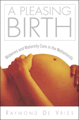

How midwifery policy in the Netherlands can help mothers in the United States
How midwifery policy in the Netherlands can help mothers in the United States


 How midwifery policy in the Netherlands can help mothers in the United States
How midwifery policy in the Netherlands can help mothers in the United States

|  |
A Pleasing BirthMidwives and Maternity Care in the NetherlandsRaymond De Vriespaper EAN: 978-1-59213-103-7 (ISBN: 1-59213-103-4) |
"In this detailed and thoughtful study, De Vries does much more than introduce us to the peculiar maternity care system of the Netherlands; he forces us to reexamine our assumptions about the way health care systems are organized, and offers new, and revolutionary, ways to think about health care reform. This is sociological analysis at its best."
—Charles L. Bosk, Ph.D., Professor of Sociology and Medical Ethics, University of Pennsylvania
Women have long searched for a pleasing birth—a birth with a minimum of fear and pain, in the company of supportive family, friends, and caregivers, a birth that ends with a healthy mother and baby gazing into each other's eyes. For women in the Netherlands, such a birth is defined as one at home under the care of a midwife. In a country known for its liberal approach to drugs, prostitution, and euthanasia, government support for midwife-attended home birth is perhaps its most radical policy: every other modern nation regards birth as too risky to occur outside a hospital setting.
In exploring the historical, social, and cultural customs responsible for the Dutch way of birth, Raymond De Vries opens a new page in the analysis of health care and explains why maternal care reform has proven so difficult in the U.S. He carefully documents the way culture shapes the organization of health care, showing how the unique maternity care system of the Netherlands is the result of Dutch ideas about home, the family, women, the body and pain, thriftiness, heroes, and solidarity. A Pleasing Birth breaks new ground and closes gaps in our knowledge of the social and cultural foundations of health care. Offering a view into the Dutch notion of maternity care, De Vries also offers a chance of imagining how Dutch practices can reform health care in the U.S. not just for mothers and babies, but for all Americans.
Excerpt available at www.temple.edu/tempress
"A Pleasing Birth provides the most comprehensive look yet into the history, the philosophy, the social attitudes, the structures, and the institutions that underlie the Dutch maternity care system. Raymond De Vries explains why and how health policymakers in the Netherlands continue to put such importance on midwifery, home birth, and everything needed to support them."
—Ina May Gaskin, author of Ina May's Guide to Childbirth and Spiritual Midwifery
"De Vries provides the definitive work on the Dutch obstetrical system, showing how this system not only reflects strong cultural values, but also has become entirely evidence-based, pointing the way toward better birth for all nations. A Pleasing Birth is essential reading for social scientists, birth professionals, birth activists, and educated consumers—a masterpiece of insight!"
—Robbie Davis-Floyd, Ph.D., author of Birth as an American Rite of Passage
"De Vries goes beyond why birth is pleasing in the Netherlands to larger questions about the role of maternity care in the health care system, how the political system influences health care, who pays for and who profits from the provision of health care, and the effects of culture."
—Judith Rooks, author of Midwifery and Childbirth in America
"[R]eaders from across the spectrum of participants in childbirth are urged to read this critical and important contribution to the literature, bearing witness to women's physiological capacity to give birth without assistance, to experience 'a pleasing birth.'"
—Birth
"This is a rewarding book to read."
—Sociological Research Online
"[DeVries'] book is a close examination of the attitudes, statistics, traditions of resisting professional interference, politics, and legislation of healthcare and much more, and it gives the reader a full understanding of The Netherlands' remarkable achievements in the realm of healthy pregnancy and birth."
—Midwifery Today
"The insights that [DeVries] brings are fascinating... [I]t provides a greater understanding for those who wish to influence and change health policy."
—Sociology of Health and Illness, November 2005
"De Vries has written an important book that gives well-deserved attention to the role of culture in the structuring and maintenance of health care systems in high-income countries such as the Netherlands and the United States."
—Canadian Journal of Sociology Online
"A Pleasing Birth is a sociological analysis of maternity care and midwifery as provided in the Netherlands; the analysis ranges from the micro- to the macro-level. DeVries provides the reader with variety of sociological evidence, such as historical data, comparative statistical date, and interviews with midwives and obstetricians... DeVries starts with an interesting story in the Preface... The book is very readable, has a good Glossary, and is well indexed."
—Sociology of Health and Illness, May 2006
"[I]mportant and wonderfully engrossing.... It is commonplace to end a review with the recommendation that a book belongs 'on the shelf of every scholar' but this book shouldn't sit on the shelf. It belongs closer at hand next to classics...and other titles one rereads, cites, recommends, and sticks bits of paper in so as not to lose track of the good quotes, useful definitions, and statistics, and memorable stories—in other words, the books that change the way we think about 'the culture of medicine.'"
—The Hastings Center Report
"A Pleasing Birth reminds me of a painting by the 17th century Dutch artist, Vermeer. De Vries works on a small canvas - maternity care in the Netherlands - yet his study is filled with detail, depth, and illumination. The author examines the structural and cultural reasons for the unique qualities of the Dutch way of birth, but he offers much more in this meticulously researched and documented book."
—Contemporary Sociology
"[DeVries] shows how and why the option of a midwife-attended home birth is
encouraged by the government and reinforced by the country's infrastructure and politics, including the education and health-insurance system, the political penchant for negotiation and compromise, and the network of good roads and hospitals that reassures mothers should they need furthercare."
—The Chronicle of Higher Education, "Nota Bene"
Preface
Part I. Birth Care/Health Care
1. Dutch Birth and the Shape of Health Care
2. Uniek, bewonderd en verguisd (Unique, admired and reviled)
Part II. Forms
3. Structuring Care
4. The Politics of Care
Part III. Forming
5. Doe maar gewoon (Just act normally): Dutch Culture/Dutch Birth
6. Two Sciences or No Science? Obstetric Research in the Netherlands
Part IV. Re-Forming
7. Is All This Suffering Still Necessary? Pressure to Change the Dutch Way of Birth
8. Re-forming Health Care: Culture and Health Policy
Glossary
References
Index
 | Raymond De Vries is a member of the Bioethics Program at the University of Michigan Medical School with joint appointments in the Department of Obstetrics and Gynecology, the Department of Medical Education, and the Department of Sociology. He is the author or editor of seven previous books, including, Birth by Design: Pregnancy, Maternity Care, and Midwifery in North America and Europe. |
Health and Health Policy
Family Policy
Sociology
© 2015 Temple University. All Rights Reserved. This page: http://www.temple.edu/tempress/titles/1735_reg.html.